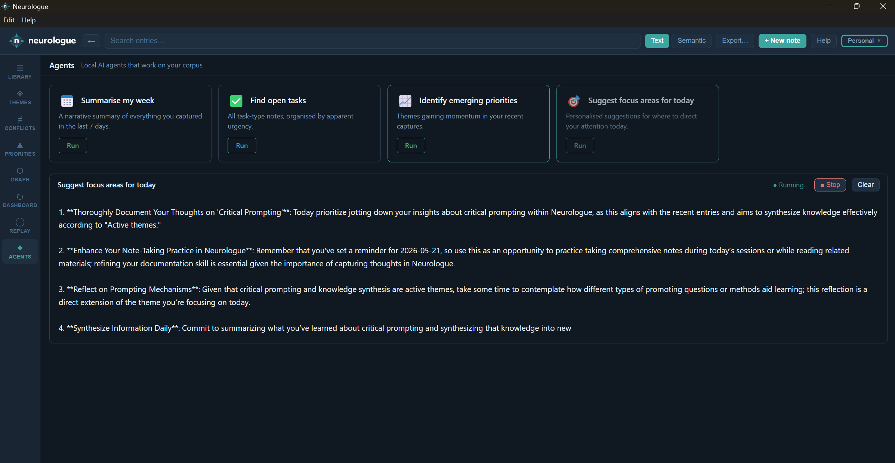

Agents
Local AI agents that read your entire corpus and produce narrative reports.

What are agents?
Agents are pre-built analysis tasks that run a local LLM against your full corpus. Unlike search — which returns individual matching entries — an agent reads across many entries at once and produces a synthesised narrative: a written report, an organised list, or a set of recommendations.
Each agent gathers structured data from your database (entries, themes, task counts), builds a carefully crafted prompt, and streams the LLM's response back to the output panel token by token — so you see the answer forming in real time.
Requires Ollama. Agents send prompts to your locally installed LLM (configured in Settings → Models). If Ollama is not running when you click Run, the agent will fail with an error message in the output panel. See Troubleshooting if Ollama isn't available.
Opening the Agents view
Click Agents in the left navigation rail of the Library window. The view shows a grid of agent cards — one card per available agent.
Available agents
Summarise my week
A narrative summary of everything you captured in the last 7 days. The agent reads all entries from the past week, identifies the key themes and ideas you were engaging with, and writes a 3–5 paragraph reflective summary in second person — "You spent time thinking about…"
Best used when: it's the end of a working week and you want a high-level view of what occupied your mind.
Find open tasks
Scans all entries categorised as Task and organises them by apparent urgency. The agent looks for wording that suggests unresolved items, groups related tasks by theme or area, and flags anything that appears time-sensitive or high-priority.
Best used when: you've accumulated many task-type notes across different themes and want to see what still needs action without trawling through the library manually.
Identify emerging priorities
Compares theme activity from this week versus the previous week and identifies which themes are gaining or losing momentum. The agent explains what the trends suggest about your current focus and highlights anything that seems to be growing in urgency or drifting away.
Best used when: you want to understand what's naturally rising to the top of your attention without consciously tracking it — useful for weekly retrospectives or planning sessions.
Suggest focus areas for today
Combines your active themes, open tasks, and recent captures to produce personalised suggestions for where to direct your attention today. The agent considers what's been most active recently, what tasks appear unresolved, and what patterns suggest growing urgency.
Best used when: you're starting a work session and want a grounded, corpus-informed answer to "what should I focus on?"
Running an agent
-
Click the Run button on any agent card. The output panel opens at the bottom of the view.
-
The agent gathers data from your corpus (entries, themes, task lists), builds a prompt, and begins streaming the LLM response token by token. The agent's name appears in the output panel header.
-
The output scrolls automatically as new text arrives. A ● Running… indicator in the panel header shows the agent is active.
-
When the agent finishes, the indicator disappears. Scroll back up to read the full response at your own pace.
Stopping an agent mid-run
Click the ■ Stop button in the output panel header to abort the agent. A [Stopped] message appears at the end of the output, and the panel returns to idle state. The output produced up to that point is preserved — you can still read whatever was generated before you stopped it.
Clearing the output
Click Clear in the output panel header to reset the panel. The output panel closes until you run another agent.
Requirements and limitations
- Agents require Ollama to be running with a configured LLM model (default:
phi3:mini). Change the LLM in Settings → Models. - Only one agent can run at a time. The Run buttons on all other cards are disabled while an agent is active.
- If Portfolio is enabled, agents read the currently active profile's corpus only. Switch profiles before running an agent to query a different profile.
- Agent results are not saved. Copy the text from the output panel if you want to keep it — or use Export to produce a full corpus snapshot for use with external AI tools.
- Output quality depends on the LLM model. Larger or more capable models produce more nuanced responses.
phi3:miniis the default as it runs well on consumer hardware; swap it for a larger model in Settings if you have the resources.
Coming in 0.10.x: A free-text chat input in the Agents view will let you ask open-ended questions and give natural language instructions, with streamed token-by-token responses — extending agents from pre-built tasks to an interactive conversational interface over your corpus.